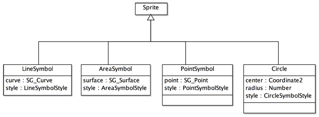

記号とは，地図を図示するときに使用される，実世界の地物のグラフィック表現のことです．記号は，個別の記号をデザインするための記号スタイルに準拠して作成します．地図は２次元の平面なので，記号は，点，線，面に分類できます．記号スタイルは，点，線，面それぞれがどのような表示用の属性をもつか，また，他のどの記号を部分品として含むかを示します．その記号スタイルは，記号スタイルスキーマに沿って定義されます．全ての記号スタイルは，記号スタイルスキーマの規則に準拠します．ここでは，まず gittk の記号スタイルスキーマについて説明し，次に記号スタイルに従って地図上に置かれる記号の生成と記号スキーマについて解説し，最後に操作画面とそれぞれの操作法を示します．
記号スタイルスキーマ
図１．gittok の記号スタイルスキーマ
CLASS
SymbolStyleDictionary
記号スタイル辞書は，点，線そして面を表現する記号スタイルの集りです．名前 (name) をもつとともに，点，線，そして面の記号スタイルの集りであるpointSymStyle, lineSymStyle, areaSymStyleを持ちます．Symbol Style Disgnerは，この辞書を生成（インスタンス化）するためにあります．
SymbolStyle
記号スタイルは記号スタイルのルートクラスです．この抽象クラスは，名前 (name) をもちます．これはpintSymbolStyleから参照されますが，点記号スタイルはこの参照によって，他の線，面記号をもつことができます．これによって，複雑な形状の点記号をデザインすることが可能になります．
LineSymbolStyle
線記号スタイルは，色(color)，太さ(thickness)，透明度 (alpha)，端点形状 (caps)，頂点形状 (joints)，点線の場合は実線部の長さ (dash)，空白部の長さ (gap)で定義します．
AreaSymbolStyle
面記号スタイルは，面を塗りつぶす色 (color)，透明度 (alpha)，面が円形かどうか (isCircle)， そして領域の境界を示す線記号 (borderStyle) で定義します．
PointSymbolStyle
点記号スタイルは，それぞれが線，面の記号定義に対応づけられる，複数の座標列 (elements) で構成されます．面記号の定義と対応する座標列は，最後の点は始点に結ばれ，内部は面記号の定義に従って塗りつぶされます．なお，このクラス図では，点記号スタイルは，styles を通じて，他の点記号スタイルを参照できますが，gittokでは現状，それはできません．線記号スタイル，面記号スタイルへの参照は可能です．
CircleSymbolStyle
円記号スタイルは，面記号スタイルのサブクラスですが，独自の属性はもちません．
ROLL NAME
pointSymbolStyles
点記号スタイルの集まり．
lineSymbolStyles
線記号スタイルの集まり．
areaSymbolStyles
面記号スタイルの集まり．
borderStyle
面記号の境界線を表現する線記号．
styles
点記号スタイルが使用する，他の記号スタイルへの参照．このクラス図では，点記号スタイルは，styles を通じて，他の点記号スタイルを参照できますが，gittokでは現状，それはできません．線記号スタイル，面記号スタイルへの参照は可能です．
記号の生成
記号 (symbol) は，kit の地物が持っている幾何属性を，記号スタイルが示す規則に従って記号化します．例えば，地物の幾何属性が点 (SG_Point) である場合，点記号スタイルが示すスタイルで記号を生成し，点の位置に描画用の記号を配置します．描画用の記号は，記号スキーマに従ってインスタンス化されます．
記号スキーマ
記号スキーマは，幾何プリミティブとしての点，曲線，面，そして特殊な面としての円を，それぞれの記号スタイルに従って，地図上に描画するための規則を示しています．記号スタイルスキーマは一般記号モデル，記号スキーマは記号インスタンスモデルといってもいいかもしれません．

図２．記号スキーマ
CLASS
Sprite
このクラスは，gittokの実装に使われている Actionscript V3.0 が用意しているクラスです．複数の子表示オブジェクトをもつことができ，また，そのインスタンスはマウスを使ってサーチしたりすることができるようになります．詳細については，Adobe Flashのサイトや，教科書を参照してください．gittokでは，記号は全て，spriteのサブクラスとして定義しています．
LineSymbol
このクラスは線記号のためのクラスです．表示する座標列と表示のためのスタイルを属性にします．gittokは，これらのデータを使って，spriteとして描画を行います．
AreaSymbol
このクラスは面記号のためのクラスです．表示する閉じた座標列と表示のためのスタイルを属性にします．gittokは，これらのデータを使って，spriteとして描画を行います．
PointSymbol
このクラスは点記号のためのクラスです．表示する位置を示す座標と表示のためのスタイルを属性にします．gittokは，これらのデータを使って，spriteとして描画を行います．
Circle
円記号を表示するクラスです．円の中心位置と半径，そして表示のためのスタイルを属性にします．gittokは，これらのデータを使って，spriteとして描画を行います．
Symbol Style Designer
下に示す図２の上部を参照のこと．
表示欄
symbol style schema
記号スタイルスキーマがオープンまたはセーブされると，ここにファイル名が表示されます．
ボタン
open
記号スタイルスキーマをオープンします．
save
記号スタイルスキーマをセーブします．
日本語
今あなたが読んでいるドキュメントが表示されます．
English
You can read the tutorial written in English
Line style stack
図２．線記号スタイルデザインのための画面
表示欄
name (編集可能)
線記号の名前を記入します．
thickness (編集可能)
線の太さを記入します．
dash (編集可能)
点線を定義するとき，実線部の長さを記入します．単位はピクセルです．
gap (編集可能)
点線を
定義するとき，空白部の長さを記入します．単位はピクセルです．
line
登録された線記号の一覧です．
design
ボタン
show
線記号のデザインが確認できます．
color
Color selector が表示され，色を指定して，page を閉じると，線記号の色が現れます．

図３．色の種類を指定するための画面
caps
線記号の端点の形状をnone, round, square の中から選択できます．
joints
線記号の折れ線頂点の形状をmiter, round, bevel の中から選択できます．

add
線記号を追加します．
edit
席号の属性を編集します．
update
編集結果で記号を更新します．
delete
一覧から線記号を削除します．
Area style stack

図４．面記号スタイルデザインのための画面
表示欄
name (編集可能)
面記号スタイルの名前を記入します．
color
Color selector （図３参照）が表示され，色を指定して，page を閉じると，線記号の色が現れます．
line
面の境界の表示に使う線記号スタイルの名前が一覧表示されます．面記号スタイルを定義するときは，線記号スタイルを選択しなければいけません．
area
登録された面記号スタイルの名前が一覧表示されます．編集，更新，削除するときは，この一覧の中から面記号スタイルを選択します．
design
show ボタンを押すと，編集された面記号スタイルが下にテスト表示されます．
ボタン
select
面の色を指定する Color Selector をオープンします．
add
面記号スタイルを area 一覧に追加します．
edit
面記号スタイルの編集が行えるようにします．
update
編集した結果を登録します．
delete
area 一覧に登録されている面記号スタイルを削除します．
show
このボタンを押すと，編集した面記号スタイルをテスト表示します．
Point style stack

図５．点記号スタイルデザインのための画面
表示欄
name（編集可能）
ポイントシンボルの名前をここに記入します．
mode
下にある編集用のパネルでデジタイズできるときは，表示がdigitizeになります．また，検索ができるときは，searchになります．それぞれの作業が終わったときにbreakボタンを押すと，モードが切り替わります．
size（編集可能）
点記号の，画面上のサイズ（幅と高さは同じと考える）を指定します．デフォルトは100pixelです．
Edit Panel（編集可能）
点記号を編集するためのパネルです．ラジオボタンで，線，面，円のどれかを選択すると，それぞれ，線記号スタイル，面記号スタイル（円の場合もスタイルは面）の一覧が表示されるので，スタイルを選択します．そして，このパネルの上でカーソルをクリックすることによって，線や面の形状を描くことができます．円の場合は，中心と円の境界位置（つまり半径）を指定すると，円が描けます．一つの図形を描いたら，breakボタンを押します．以上の操作は何回も続けることができます．図形の形が気に入らない場合は，searchボタンをおして，カーソルを該当する図形の上（円の場合は境界）でクリックします．すると，線が太くなり，選択されたことが分かりますので，deleteボタンを押すと，その図形は削除されます．
line style
デジタイズする線のスタイルの一覧が表示されます．
area style
デジタイズする面又は円のスタイルの一覧が表示されます．上の図では見えないですが，ラジオボタンでareaまたはcircleを選択すると，一覧が現れます．
point
点記号スタイルの名前の一覧がここに表示されます．編集したり，削除したりするときは，事前にこの中から該当するものを選択してきます．
ボタン
line
このラジオボタンを押すと，右側に線記号スタイルの一覧が現れます．その中から適当なものを選ぶと，そのスタイルで線（折れ線）のデジタイズができます．
area
このラジオボタンを押すと，右側に面記号スタイルの一覧が現れます．その中から適当なものを選ぶと，そのスタイルで面（多角形）のデジタイズができます．
circle
このラジオボタンを押すと，右側に面記号スタイルの一覧が現れます．その中から適当なものを選ぶと，そのスタイルで円のデジタイズができます（中心と境界の位置を指定）．
break
デジタイズの区切り，または検索の終了時にこのボタンを押します．
search
デジタイズモードからサーチモードに変更するときに，このボタンを押します．
delete
サーチされた図形を消去するときに，このボタンを押します．
clear all
デジタイズした図形全部を消去するときに，このボタンを押します．
add
デジタイズした点記号スタイルをpointリストに追加するときに，このボタンを押します．
edit
pointリスト上で選択した点記号スタイルを編集したいときに，このボタンを押します．
update
編集した結果を使って，スタイルを更新するときに，このボタンを押します．スタイルを更新するときは，必ず押すようにしてください．
delete
pointリスト上で選択したスタイルを削除するときに，このボタンを押します．